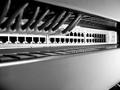

New view for the Mac
MAC FACTS by CHRIS OATEN
April 5, 2006

NO longer is Apple hardware v Windows hardware a valid argument. Apple hardware is Windows hardware.
Let's back it up a little, in case you missed the news. Apple recently released a beta version of Boot Camp Assistant, which owners of Intel-powered Macs can use to install Windows XP on their machines.
Apple says the beta version is time limited but is not saying for how long. My call is it will remain beta software until Leopard (OS 10.5) is released, presumably towards the end of the year and almost certainly before Microsoft can push Vista out the door.
Boot Camp is not an emulator or some kind of virtualisation engine. It is a tool to configure a Macintosh drive so that Windows can boot into the same Intel architecture that Apple's OS X does. Here's how it works. First, an Intel Macintosh must have its operating system updated to 10.4.6 and then its firmware updated. Mac users on dial-up will want to lean on a friend to get these updates, available only as free downloads, and weighing in at about 180MB.
Once this is done, Boot Camp must be downloaded and installed. On launching Boot Camp, you are prompted to burn a CD with all the device drivers Windows will need.
Then a portion of the hard drive (a minimum of 10GB) is allocated as a partition on to which Windows XP will be installed. A graphical representation of hard drive space with a slider bar to adjust partition sizes makes this easy.
Box Content
Aenean eros arcu, condimentum nec, dapibus ut, tincidunt sit amet, urna. Quisque viverra, eros sed imperdiet iaculis, est risus facilisis quam, id malesuada arcu nulla luctus urna. Nullam et est. Vestibulum velit sem, faucibus cursus, dapibus vestibulum, pellentesque et, urna. Donec luctus. Donec lectus. Aliquam eget eros facilisis tortor feugiat sollicitudin. Integer lobortis vulputate sapien. Sed iaculis erat ac nunc.
This, incidentally, is some very swish software able to dynamically partition a drive. That is, it creates partitions on drives with existing data without compromising that data. No re-formatting of the drive necessary. Apple would do well to commercialise it.
There is also a choice to be made regarding file systems — NTFS or FAT, the latter providing the best cross—platform compatibility.
Then you restart with a Windows XP installer disk (which must a be single disk installer, XP Home Edition or Professional, with Service Pack 2), choose a C: drive (take care with this step or you lose the Mac partition data) and off you go. Follow the installer, complete the installation, restart the computer, run the driver installer disk that was made earlier in the process and you're good to go. XP on a Mac.
Just like the "real" thing. Or almost. There is no support for the Mac's built-in web camera. The graphics card, optical drive, networking, Airport wireless, Bluetooth, Apple's keyboard eject key and brightness control, and mouse/trackpad are supported. Some users have reported Bluetooth not working. In my trial, the audio jack didn't work.
When you want to boot into Mac OS X, hold the Alt key on startup to invoke a boot disk chooser.
If you are concerned about the quality of Boot Camp in its beta form, you are probably respectably exercising some warranted caution, as beta software is famous for its buggy nature. Boot Camp, however, is more version one quality than many I've tried. So much so it speaks volumes not only as software in its own right but clearly flags Apple's market strategy.
Users must be aware Apple is unwilling to sell or support Windows XP. For that you must rely on Microsoft. Apple also warns that Boot Camp should not be used in a commercial environment and, at its website, reminds users that Windows is susceptible to the same viruses and malware issues that would compromise it if it were installed on any other machine.
Much of the initial reaction to Boot Camp has involved concerns about what it means to Macintosh software developers, not least of which is Microsoft itself. Why, for instance, would Microsoft develop Virtual PC, its Windows emulation software for Mac, when Mac users can simply boot into XP natively?
A Microsoft spokesperson said Microsoft has been committed to the Mac platform for more than 20 years, and "that has not changed".
"The Mac Business Unit is in the process of understanding what product development barriers need to be overcome, and continues to work with Apple to incorporate changes into the OS that would be needed for a Virtual PC solution for Intel-based Macs. While Microsoft hasn't made any final decisions on the future of Virtual PC, it is investigating as quickly and thoroughly as possible."
Of more widespread concern is how Macintosh game developers will be hurt if keen gamers simply buy the Windows version of games software. This question was put to major developer Aspyr with more than a week's notice to this story's deadline. With no response forthcoming, it's a fair bet Aspyr is carefully considering its position.
For users, however, the benefits of a dual-booting computer are clear. Mac users who love their games are in a very happy place, able to not only enjoy a wider range of titles but to save money in the long run due to the competitive pricing of PC games — even after the $300 needed to buy their own copy of Windows XP Home.
If you are wondering about games performance when running XP, the news is mostly good. Games such as Command and Conquer Generals and SimCity 4 run at a blistering pace on a 2GHz Intel iMac, even with graphics settings maxed out. Immersive 3D games are a different story. I tried Fable, which ran OK with default graphics settings but quickly became a slideshow with anti-aliasing and shadow detail settings increased.
This should come as no surprise to those who know their graphics cards. The ATI X1600 card in the Intel Macs is a capable one but it's not a high-end offering.
Other users who will benefit from Boot Camp are those sitting on the fence about making the switch to Mac. Tempted as they may be by the lure of the Mac OS, they find it hard to abandon their Windows software investment. Now they can make the transition more on their own terms.
Web developers are another group set to benefit, able to build websites and test their code in both Windows and Macintosh and doing so on the one machine, although like most pro users they should wait for Boot Camp's fully developed release in Leopard.
Then there are those users who would buy a Mac if only they didn't have to own a Windows PC in order to run mission-critical software. Now they, too, have a compelling reason to go with their preferred platform.
The release of Boot Camp also compelled the beta release of third-party software called Parallels — Windows emulation software that allows users to run XP alongside the Mac OS. Apple will likely make this kind of emulation a feature of Leopard. I'm trialling Parallel now and plan on offering an assessment in the coming weeks.
There's no shortage of observer and analyst opinion on how Boot Camp changes market dynamics for Apple, Microsoft and manufacturers of PC hardware with the web buzzing with all sorts of reactions, swinging from one extreme to the other.
Only time will reveal the full extent of these dynamics but two facts remain intractable.
One is that if you want a computer that can boot into either the Mac OS or Windows XP, there is only one company offering that product, and that company is Apple Computer. The other is that the market size for Microsoft's operating system has just been expanded courtesy of Apple Computer.
If you've been following the fortunes of either of these two companies for any length of time, then the irony of Macs running XP should be slapping you in the face right about now.